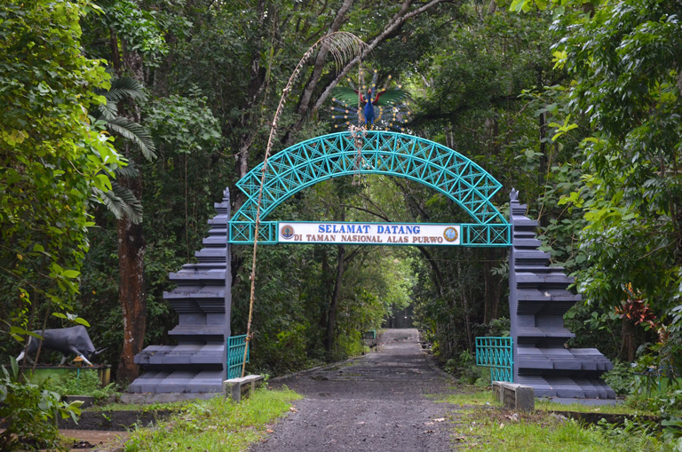
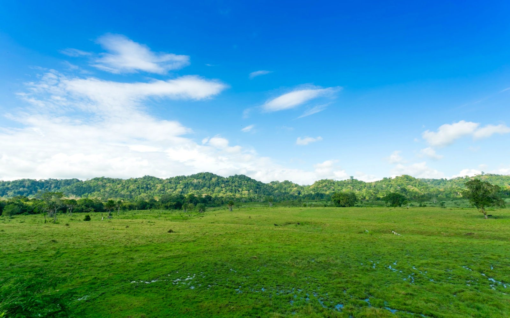
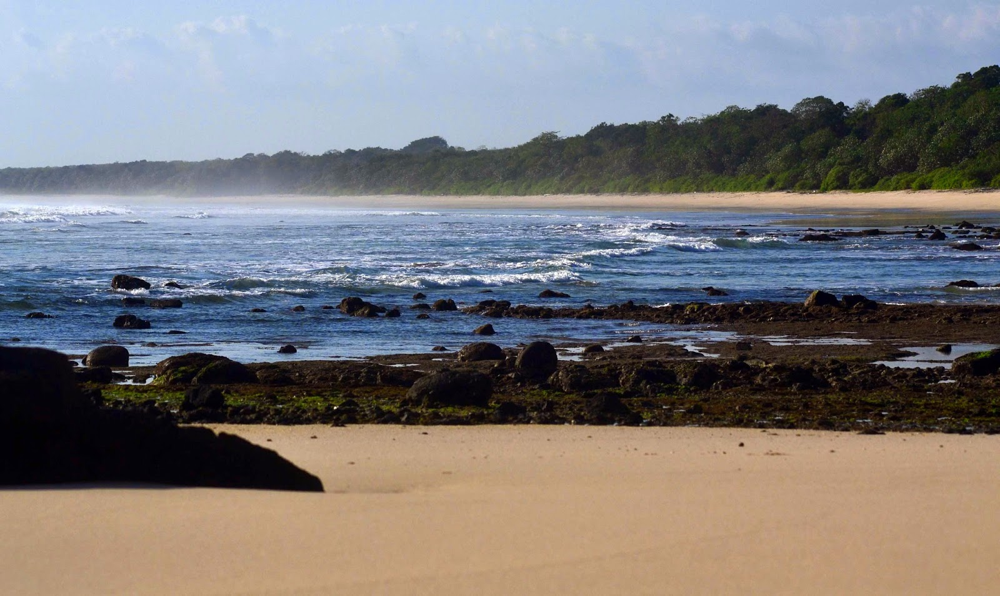
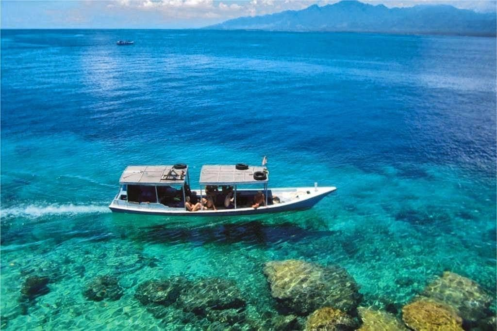

Wisata Kalipait
Mesti terlihat sederhana dan kurang terkenal seperti tempat lainnya, Kalipait menyimpan banyak wisata yang tentunya sangat menarik untuk dikunjungi apalagi dengan adanya waktu liburan bersama keluarga tercinta.
Ada apa aja sih? Yuk, kita cek!!!
Padang Savana Sadegan
Awalnya Sadengan merupakan padang penggembalaan (feeding ground) bagi banteng (bos javanicus) sebagai satwa prioritas pengelolaan. Seperti di Afrika, ternyata Sadengan juga menjadi tempat berkumpul berbagai jenis hidupan liar untuk bersosialisasi dan mencari makan. Selain banteng, hidupan liar yang sering dijumpai antara lain rusa, kijang, anjing hutan (ajag), merak hijau, jalak putih dan beberapa jenis burung.
Pengamatan hidupan liar terbaik pada pagi hari pukul 05.30-09.00 dan sore hari pukul 15.00-18.00 waktu setempat.
Trianggulasi
Daerah ini menjadi salah satu titik acuan dari tiga titik ikat pengukuran pada pemetaan (triangular) sehingga daerah ini dinamakan dengan Trianggulasi. Salah satu daerah pantai terbaik untuk menikmati sunset dengan informasi hutan pantai yang masih utuh.
Beberapa jenis hidupan liar yang dapat dijumpai disini diantaranya monyet ekor panjang, lutung, dan rusa. Untuk menunjang kegiatan pendidikan dan penelitian tersedia sarana berupa pondok penelitian dan pasanggrahan.
Pancur
Dinamakan Pancur karena daerah ini memiliki sungai yang mengalir sepanjang tahun, yang pada bagian hilirnya terhimpit secara alami oleh batuan terjal, di pantai airnya mengalir seperti pancuran mengarah ke laut. Terdapat area camping ground yang dilengkapi dengan fasilitas kamar mandi dan musholla. Pancur juga menjadi daerah transit untuk menuju ke Pantai Plengkung dan wisata spiritual di goa.
Wisata Goa
Pada Taman Nasional Alas Purwo terdapat empat goa yang cukup dikenal oleh masyarakat, yaitu Goa Istana, Goa Mayangkoro, Goa Padepokan, dan Goa Mangleng. Masyarakat menganggap goa-goa tersebut memiliki nilai sacral (dikeramatkan) sehingga sering digunakan semedi (bertapa) untuk menambah ilmu dan kesaktian.
Bahkan Goa Istana terdapat sumber air bernama ‘Sendang Srengenge’ yang airnya diyakini membuat tubuh awet muda. Lokasi goa-goa tersebut dapat dijangkau dari Pantai Pancur.
Plengkung (G-Land)
Lokasi yang diburu oleh pencinta olahraga selancar (surfing) terletak di ujung selatan kawasan Taman Nasional Alas Purwo. Daerah yang berbatasan langsung dengan Samudera Hindia ini memiliki ombak besar dengan beragam bentuk dan ukuran, dengan ketinggian mencapai 6-7 feet dan panjang sekitar 1-2 km.
Ombak di G-Land menempati urutan ke 2 dunia setelah Pantai Hawai. Waktu terbaik untuk olahraga surfing sekitar Bulan Maret-Oktober.
Di Plenkung tersedia sarana penginapan dan perlengkapan surfing yang diusahakan oleh 3 perusahaan, yaitu PT. Plengkung Indah Wisata (Joyo’s Surf Camp), PT. Wana Wisata Alam Hayati (G-Land Surf Camp), dan PT. Wanasari Pramudita Ananta (Bobby’s Surf Camp).
Ngagelan
Ekosistem Pantai Ngagelan merupakan habitat peneluran 4 jenis penyu, yaitu Penyu Lengkang/Abu-abu, Penyu Sisik, Penyu Hijau, dan Penyu Belimbing. Di Ngagelan, kehadiran Penyu Lengkang mendominasi hampir seluruh pantai sepanjang 18 km, jika dibandingkan dengan 3 jenis penyu lainnya.
Balai Taman Nasional Alas Purwo menetapkan Ngagelan sebagai ‘Pusat Konservasi Penyu’ sehingga dilengkapi dengan fasilitas pos, lokasi penetasan telur, dan bak pemeliharaan tukik (anak penyu).
Bedul
Bedul terletak di Sungai Segoro Anakan yang merupakan sungai terbesar dalam Kawasan Taman Nasional Alas Purwo dengan panjang mencapai 16 km.
Bedul dikelilingi oleh ekosistem mangrove yang terjaga utuh yang berfungsi sebagai breeding area dan nesting area beberapa jenis burung air, seperti; bangau tongtong, dara laut jambul, dan cekakak sungai. Secara tradisional Bedul merupakan daerah pencarian kepiting, kerang, udang, dan ikan.
Ekowisata di Bedul telah dikembangkan oleh masyarakat bersama Balai Taman Nasional Alas Purwo, dilengkapi dengan beberapa fasilitas pendukung seperti gondang-gandong (perahu tradisional), musholla, warung makan, tempat parkir, dan gazebo.
Cungur
Cungur berada pada mulut muara Segoro Anakan, sangat cocok untuk pengamatan burung (bird watching), khususnya untuk jenis burung-burung migran dan burung air.
Lebih dari 16 jenis burung migran mencari makan dan berkembang biak di Cungur selama musim dingin, yaitu mulai Bulan September-Februari.
Sembulungan
Sembulungan merupakan nama tanjung yang menjorok dari Kedungsari sampai perairan depannya Kedungrejo dan membentuk Teluk Pangpang. Daerah ini berada di bagian Utara Taman Nasional Alas Purwo.
Secara umum ekosistem hutan di Sembulungan berupa hutan hujan dataran rendah yang didominasi oleh jenis-jenis bambu. Terdapat goa-goa dan meriam peninggalan Jepang pada Perang Dunia II dapat dijumpai di Sembulungan.
Upacara tradisional “Petik Laut” oleh nelayan Muncar biasa diselenggarakan di Makam Gandrung setiap tanggal 15 Muharam.
Teluk Banyubiru (Slenggrong)
Teluk Banyubiru menyimpan potensi alam bawah laut yang sangat mempesona berpadu dengan panorama pesisir pantai khas Taman Nasional Alas Purwo.
Masyarakat percaya bahwa ikan yang ada di Teluk Banyubiru tidak akan pergi karena perairan di teluk ini berwarna biru dan relatif tidak ada ombak (tenang) sehingga dikenal dengan “kantong ikan”.
Teluk Banyubiru sangat cocok untuk aktivitas diving, snorkeling, free dive dan memancing.
Situs Kawitan dan Pura Giri Salaka
Awal ditemukannya, Situs Kawitan berupa gundungan tanah (gumuk), setelah digali (dibongkar) ternyata terdapat tumpukan batu-batu persegi yang diyakini sebagai gapura. Belum diketahui dengan pasti berapa umut batu-batu tersebut, namun hal ini menjadi tanda adanya kehidupan di Alas Purwo pada zaman dahulu.
Adapun Pura Giri Salaka berdampingan dengan Situs Kawitan. Pura Giri Salaka ramai dikunjungi oleh umat Hindu untuk melakukan ritual sembahyang khususnya saat upacara “Pagerwesi” setiap hari Rabu “Shinta Pasa Kliwon Sasek Ketiga” yang berulang setiap 210 hari.